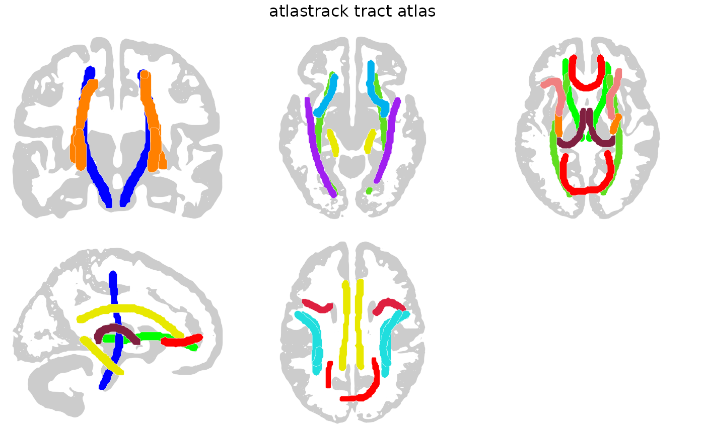

Brain atlas for the AtlasTrack probabilistic white matter fiber tract parcellation, commonly used with ABCD study data.
Value
A ggseg.formats::ggseg_atlas object.
References
Hagler DJ Jr, et al. (2019). "Image processing and analysis methods for the Adolescent Brain Cognitive Development Study." NeuroImage, 202:116091. doi:10.1016/j.neuroimage.2019.116091
Examples
atlastrack()
#>
#> ── atlastrack ggseg atlas ──────────────────────────────────────────────────────
#> Type: subcortical
#> Regions: 35
#> Hemispheres: right, left, NA
#> Views: axial_1, axial_2, axial_3, axial_4, axial_5, axial_6, axial_7,
#> coronal_1, coronal_2, coronal_3, coronal_4, coronal_5, sagittal
#> Palette: ✔
#> Rendering: ✔ ggseg
#> ✔ ggseg3d (meshes)
#> ────────────────────────────────────────────────────────────────────────────────
#> # A tibble: 35 × 3
#> hemi region label
#> <chr> <chr> <chr>
#> 1 right r fx R_Fx
#> 2 left l fx L_Fx
#> 3 right r cgc R_CgC
#> 4 left l cgc L_CgC
#> 5 right r cgh R_CgH
#> 6 left l cgh L_CgH
#> 7 right r cst R_CST
#> 8 left l cst L_CST
#> 9 right r atr R_ATR
#> 10 left l atr L_ATR
#> 11 right r unc R_Unc
#> 12 left l unc L_Unc
#> 13 right r ilf R_ILF
#> 14 left l ilf L_ILF
#> 15 right r ifo R_IFO
#> 16 left l ifo L_IFO
#> 17 NA fmaj Fmaj
#> 18 NA fmin Fmin
#> 19 NA cc CC
#> 20 right r slf R_SLF
#> 21 left l slf L_SLF
#> 22 right r tslf R_tSLF
#> 23 left l tslf L_tSLF
#> 24 right r pslf R_pSLF
#> 25 left l pslf L_pSLF
#> 26 right r scs R_SCS
#> 27 left l scs L_SCS
#> 28 right r fscs R_fSCS
#> 29 left l fscs L_fSCS
#> 30 right r pscs R_pSCS
#> 31 left l pscs L_pSCS
#> 32 right r sifc R_SIFC
#> 33 left l sifc L_SIFC
#> 34 right r ifsfc R_IFSFC
#> 35 left l ifsfc L_IFSFC
plot(atlastrack())
